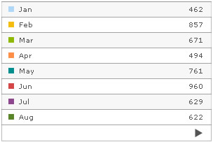
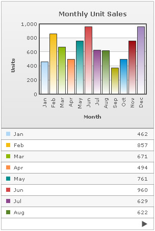
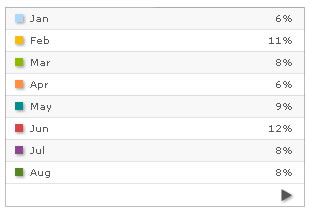

| How to Use? |
Here, we will see how to use the grid component. To start with, we will first create a very basic page with just a grid (and no chart even). To do so, create a new HTML file SimpleGrid.html with the following code: All code examples discussed in this section is present in Download Package > Code > Grid. |
<html>
<head>
<script language="JavaScript" src="../FusionCharts/FusionCharts.js"></script>
</head>
<body bgcolor="#ffffff">
<div id="chartdiv" align="center">
The grid will appear within this DIV.
</div>
<script type="text/javascript">
var myChart = new FusionCharts("../FusionCharts/SSGrid.swf", "myGrid1", "300", "200", "0", "1");
myChart.setXMLUrl("Data.xml");
myChart.render("chartdiv");
</script>
</body>
</html>
|
In the above code, like any other previous chart, we are embedding the grid component (SSGrid.swf) and then providing Data.xml as its dataURL. Data.xml contains the following single series data: |
<chart caption='Monthly Unit Sales' xAxisName='Month' yAxisName='Units' showValues='0' decimals='0' formatNumberScale='0' labelDisplay='Rotate'>
<set label='Jan' value='462' />
<set label='Feb' value='857' />
<set label='Mar' value='671' />
<set label='Apr' value='494' />
<set label='May' value='761' />
<set label='Jun' value='960' />
<set label='Jul' value='629' />
<set label='Aug' value='622' />
<set label='Sep' value='376' />
<set label='Oct' value='494' />
<set label='Nov' value='761' />
<set label='Dec' value='960' />
</chart>
{
|
When you now view this page, you will see the following output: See it live! Let us now see how to plug this grid with a chart. |
| Combining the grid with a chart |
Using the grid with a chart is same as using two chart types. The only difference is that the grid and chart now use the same data source instead of two different data sources. The following HTML code (GridWithChart.html) will explain the concept: |
<html>
<head>
<script language="JavaScript" src="../FusionCharts/FusionCharts.js"></script>
</head>
<body bgcolor="#ffffff">
<div id="chartDiv" align="center">The chart will appear within this DIV. </div>
<script type="text/javascript">
var myChart = new FusionCharts("../FusionCharts/Column2D.swf", "myChart", "300", "250", "0", "1");
myChart.setXMLUrl("Data.xml");
myChart.render("chartDiv");
</script>
<div id="gridDiv" align="center">The grid will appear within this DIV. </div>
<script type="text/javascript">
var myGrid = new FusionCharts("../FusionCharts/SSGrid.swf", "myGrid1", "300", "200", "0", "1");
myGrid.setXMLUrl("Data.xml");
myGrid.render("gridDiv");
</script>
</body>
</html>
|
In the above code, we are first rendering the chart and then rendering the grid. The dataURL for both is provided as Data.xml, as want the grid to relate to the chart itself. When you now view this, you'll get the following output: See it live! |
| Providing parameters to grid |
Apart from the configuration parameters provided in XML/JSON, you can also specify exclusive parameters for the grid. This is done using FlashVars, as the XML/JSON already contains parameters for the chart and you cannot disturb that. The grid supports a lot of parameters listed in next section. Here, we will just see how to use them. Shown below is an example, where we convert our above example to show percentage values in grid instead of values. The grid exposes a parameter which helps you do so. Also, we will set the grid to show shadow for the color boxes and navigation buttons. The following code does the same (ParameterGrid.html): |
<html>
<head>
<script language="JavaScript" src="../FusionCharts/FusionCharts.js"></script>
</head>
<body bgcolor="#ffffff">
<div id="griddiv" align="center">The grid will appear within this DIV.</div>
<script type="text/javascript">
var myGrid = new FusionCharts("../FusionCharts/SSGrid.swf", "myGrid1", "300", "200", "0", "1");
myGrid.setXMLUrl("Data.xml");
//Set Grid specific parameters
myGrid.configure('showPercentValues', '1');
myGrid.configure('showShadow', '1');
myGrid.render("griddiv");
</script>
</body>
</html>
|
As you can see above, we have added two new parameters for the grid named as showPercentValues and showShadow. We've set 1 as value for both these parameters. The supported list of parameters for the grid is listed in next section. Existing users: Earlier addVariable() function was used to set these parameters. addVariable() is now deprecated. We recommend the use of configure() function to set these parameters. When you now see this grid, it will look as under: See it live! As you can see, the numbers have been converted to percent values and also there is the shadow effect. |